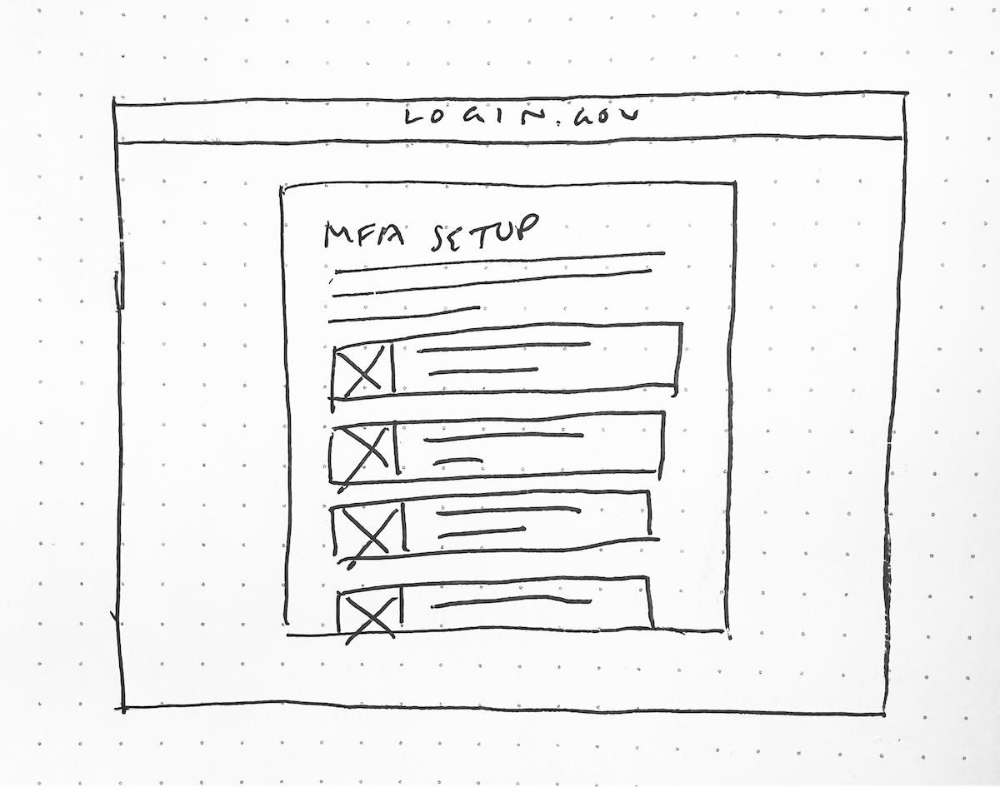
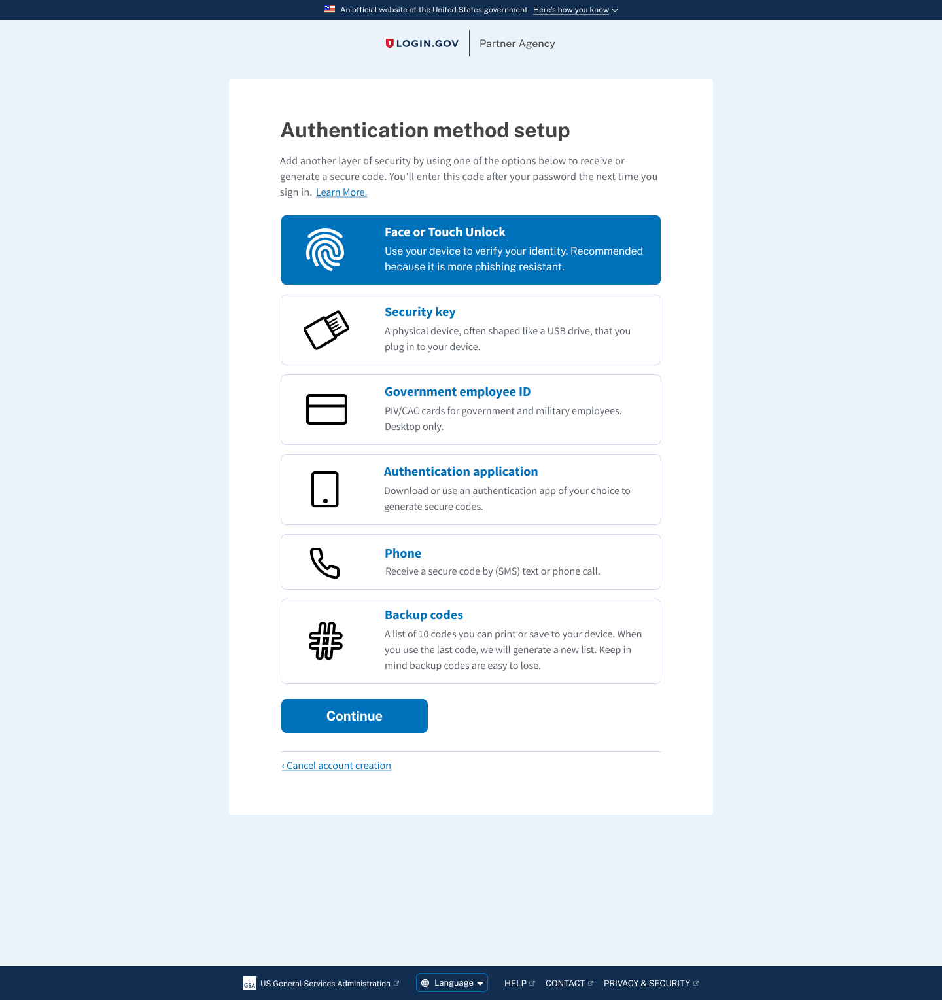
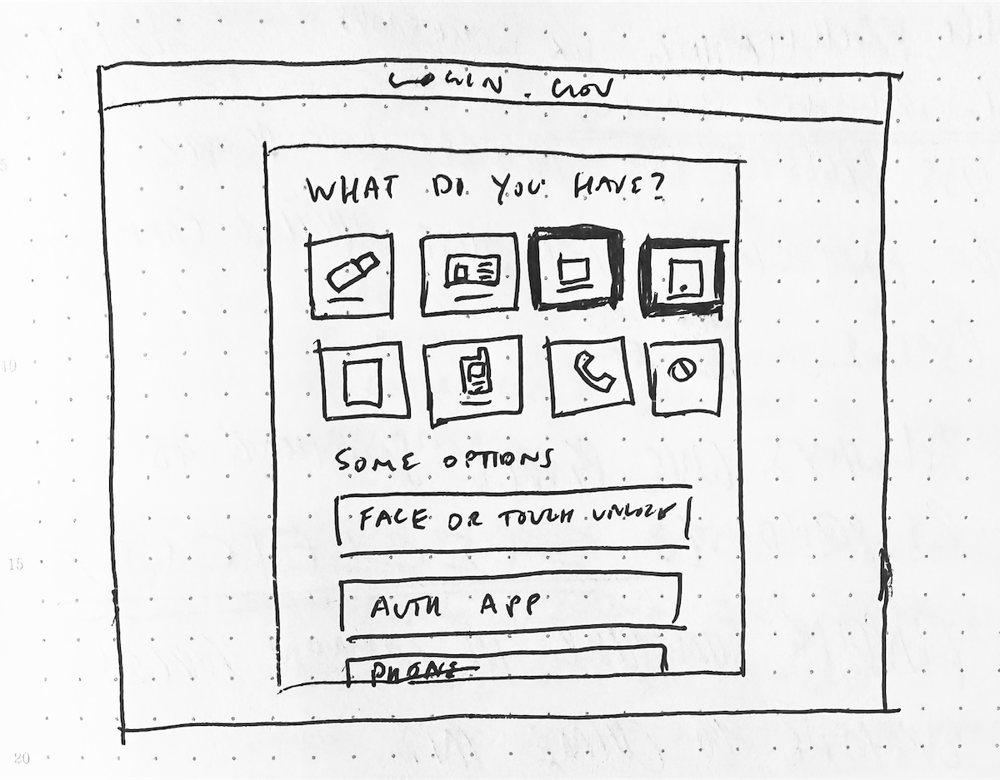
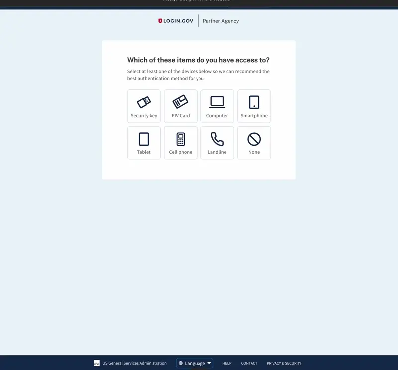

Login.gov
Product • UX Research • Content Design
Following updates to the design of the authentication selection screen, Team Katherine next task was to devise ways to get users to select more than one authentication method when creating an account.
In November 2021 Login.gov allowed users to set up only one Multi-Factor Authentication (MFA) method from the MFA Selection screen when first creating an account.
Since the current functionality limits users to only setting up one authentication method at account creation, many users don't realize they can add multiple MFA methods from their account page. Having only one MFA method increases their chances of being locked out and needing to go through the account recovery process.
We are looking to determine which MFA selection design is most successful at:
The research questions we'd like to answer:
The team conducted unmoderated usability testing to learn more about how end users select MFA methods. The test was performed through UserTesting.com. Participants independently walked through a series of tasks and questions as they navigated 2 interactive prototypes.
The team conducted 12 usability tests in 2 groups using two prototypes that showed both design versions just in different arrangements in order to diminish the recency/primacy bias.
To give new users more context we can provide them with illustrations that accompany each authentication method. The hypothesis was that users could scan through the options faster to make a decision.
 Using the principle of progressive disclosure, I wanted to have users select one or more devices in a list instead of having to read through each authentication option. The hypothesis was that users would have an easier time selecting the devices they were familiar with before being presented with authentication options.
 All users were able to successfully select an MFA method and comprehend how it secured their Login.gov account.
4 of 6 users from Group B had positive comments on the Illustration layout.From July 15 to July 18 2022, 50k users signed up with more than 1 MFA (multi-factor authentication method) on first account setup vs 192k users who selected just 1 MFA of those 192k users.
We had 55k go to the second MFA screen to select a secondary MFA. 192k / 105k makes for a 55% improvement in users selecting a 2nd MFA method. This prevents the likelihood of these users getting locked out of their accounts if they lose access to one of their MFAs.
© Mostyn Griffith 2022